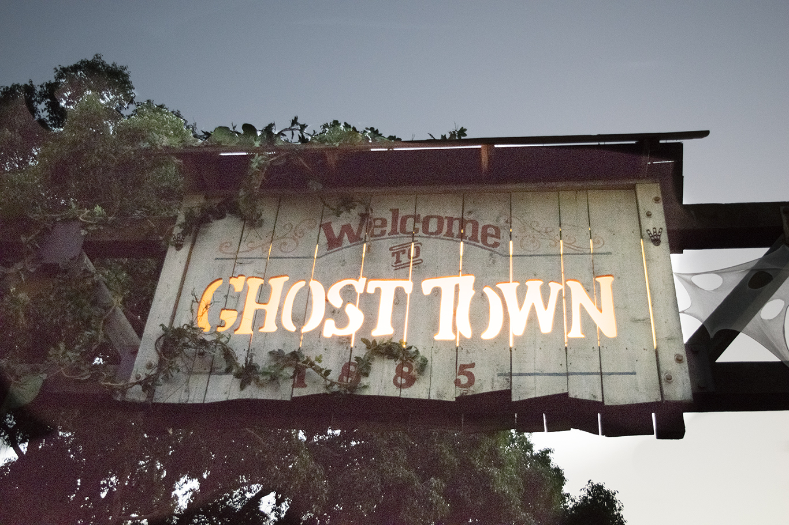

GhostTown
As a child, Walter Knott spent his early years living in Calico, CA. He helped build a silver mill during WWI. Later on in life he bought Calico, years later sold it to San Bernadino County but bringing some of the Calico Ghost Town to Buena Park, CA
Last updated 3 mins ago

Boysenberry
Knotts Berry Farm was an actual berry farm that introduced the Boysenberry! They now hold the Boysenberry Festival
Last updated 3 mins ago

Log Ride
The Log Ride was Knotts first big attraction. It sits 75 feet high and opened in 1969. John Wayne was the first rider on it as well!
Last updated 3 mins ago